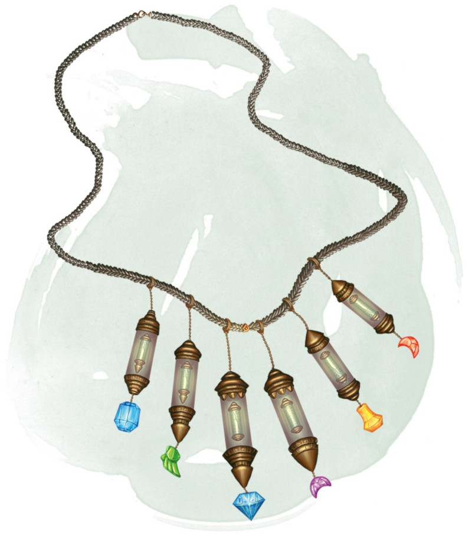

Collier de perles de prière
[ Necklace of Prayer Beads ] [ Chapelet ]
Objet merveilleux, rare (nécessite un lien par un clerc, druide ou paladin)
Ce collier possède 1d4 + 2 perles magiques fabriquées à partir d'aigue-marine, de perle noire ou de topaze. Il comporte également de nombreuses perles non magiques fabriquées à partir de pierres telles que l'ambre, l'héliotrope, la citrine, le corail, le jade, la perle ou le quartz. Si une perle magique est retirée du collier, celle-ci perd sa magie.
Six types de perles magiques existent. Le MD décide le type de chaque perle du collier ou le détermine de façon aléatoire. Un collier peut avoir plus d'une perle de même type. Pour en utiliser une, vous devez porter le collier. Chaque perle contient un sort que vous pouvez lancer à partir d'elle par une action bonus (en utilisant le DD de sauvegarde de vos sorts si une sauvegarde est nécessaire). Une fois que le sort d'une perle magique est lancé, cette perle ne peut plus être utilisée de nouveau avant la prochaine aube.
Six types de perles magiques existent. Le MD décide le type de chaque perle du collier ou le détermine de façon aléatoire. Un collier peut avoir plus d'une perle de même type. Pour en utiliser une, vous devez porter le collier. Chaque perle contient un sort que vous pouvez lancer à partir d'elle par une action bonus (en utilisant le DD de sauvegarde de vos sorts si une sauvegarde est nécessaire). Une fois que le sort d'une perle magique est lancé, cette perle ne peut plus être utilisée de nouveau avant la prochaine aube.
| d20 | Perle de ... | Sort |
|---|---|---|
| 1–6 | Bénédiction | bénédiction |
| 7–12 | Soins | soins (niveau 2) ou restauration partielle |
| 13-16 | Faveur | restauration supérieure |
| 17-18 | Châtiment | châtiment révélateur |
| 19 | Invocation | allié planaire |
| 20 | Vent | marche sur le vent |
Dungeon Master´s Guide (SRD)
